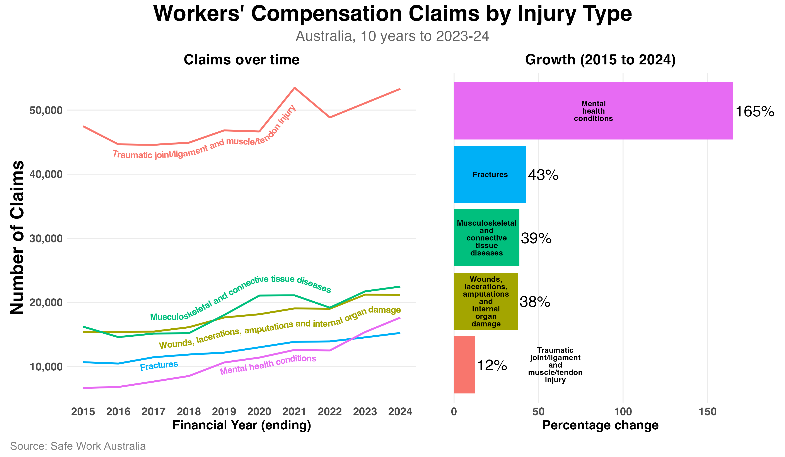

Safe Work Australia data tells an interesting story.
The figure below shows claims for the five most common injury types over the decade up to 2024. The left panel tracks yearly claim numbers; the right panel shows percentage growth from 2015 to 2024.

Traumatic joint, ligament and muscle injuries remain the most common claim type by far at around 50,000 per year. But growth has been modest at 12%.
On the other hand, mental health claims grew by 165% over that same period. At this rate, mental health claims are on track to be the second most common type of claim within the next few years.
Even more concerning is the fact that mental health claims tend to be costlier for both individuals and organisations. The median compensation paid for mental health conditions is more than three times greater than that of all physical injuries and illnesses, and the time lost for these claims is about four times higher than for physical injuries.
This trend raises some interesting questions. Are more people experiencing psychological harm at work? Are we getting better at recognising these issues? Are there now fewer barriers to making these claims?
Either way, these trends are an important signal for organisations.